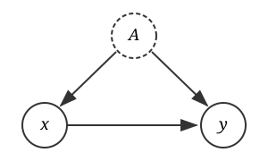

6.4 Identifikasjon og kausalitet
Litteratur Denne modulen er godt dekket av Scott Cunninghams Causal Inference: The Mixtape, tilgjengelig på https://mixtape.scunning.com. Cunningham har også nyttige data- og kodeeksempler. Se særlig kapittel 4 og 8. Kapittel 7 og 9 beskriver eksempler på metoder for å studere naturlige eksperimenter (Differences-in-Differences og instrumentelle variabler), som vi bare ser kort på i dette kurset. Det er ikke meningen at vi skal lære å gjennomføre disse mer avanserte regresjonsmetodene. Målet er i stedet at vi skal lære å reflektere over kausalitetsspørsmålet, og vite om noen vanlige løsninger når variasjonen vi er interessert i, i utgangspunktet er endogen.
For deg som er særlig interessert anbefales boka Mastering ’Metrics av Angrist og Pischke (2015), som bl.a. er tilgjengelig på NHH-biblioteket. Kapittel 1 og 2 er mest sentrale for oss. Kapittel 3 og 5 beskriver eksempler på metoder for å studere naturlige eksperimenter (Differences-in-Differences og instrumentelle variabler).
6.4.1 Kausalitet
Hittil i faget har vi i stor grad beskrevet statistiske sammenhenger. Vi har kunnet observere en korrelasjon (om to variabler samvarierer) og andre statistiske trender, eksempelvis om et utfall systematisk er større enn null. Vi har imidlertid i liten grad kunne sagt noe om effekter eller om én variabel har forårsaket en endring i en annen variabel.
Ofte er målet med statistisk analyse å si noe om hvorvidt én variabel påvirker en annen variabel, eller om en hendelse fører til en annen hendelse. Dette kaller vi å trekke kausale slutninger, nemlig slutninger som sier noe om en årsakssammenheng. Det ligger noen vilkår til grunn for at det skal være mulig å tolke en sammenheng kausalt, men disse vilkårene lar seg som regel ikke teste med data. I praksis er dette ofte et tolkningsspørsmål: Hvis vi har brukt data til å finne en statistisk sammenheng, hva forteller denne sammenhengen oss om virkeligheten?
Hittil i kurset har vi understreket at å gjennomføre statistiske tester (som hypotesetester) eller estimere parametere (for eksempel med lineær regresjonsanalyse) ikke er tilstrekkelig for å trekke kausale slutninger. Denne delen introduserer noen verktøy for å vurdere om det er rimelig å trekke en kausal slutning i ulike situasjoner, og hvilke grep vi kan ta for å gjøre det mer rimelig.
6.4.2 Identifikasjon
Første steg i empirisk analyse er alltid å bestemme seg for et forskningsspørsmål. I denne sammenhengen: Hva er effekten du vil estimere? Det innebærer å stille et presist og målbart spørsmål. La oss si at vi ønsker å si noe om effekten av å ta høyere utdanning på fremtidig lønn. Selv om dette antyder et spørsmål, er det ikke nok til å sette fingeren på hvilken parameter vi trenger å estimere. For å bestemme oss for denne parameteren, er det nyttig med et tankeeksperiment: Hva vil vi endre, og hva vil vi måle? Ved å se for oss at vi tvinger noen til å ta ett års ekstra skolegang, hva skjer med lønna deres fem år senere?
Identifikasjon er et sentralt begrep i økonometrien, og omhandler parameteren vi ønsker å si noe om. Ofte kan vi hente denne fra en teoretisk modell, eller fra et bredere, mer generelt forskningsspørsmål vi vil vite mer om. Der estimering handler om hva vi kan si på bakgrunn av den dataen vi har foran oss, er identifikasjon mer abstrakt. Vi sier at en parameter er identifisert hvis vi kan bestemme den basert på data som kan observeres (men ikke nødvendigvis som vi observerer). Vi kan tenke på dette som at vi klarer å forestille oss en setting vi kan bruke til å identifisere parameteren – selv om vi ikke nødvendigvis har dataen.
6.4.2.1 Det ideelle eksperimentet
Den enkleste måten å tenke på identifikasjon på er å sette opp et ideelt eksperiment. Gitt parameteren du vil identifisere, hva er den ideelle måten å måle dette på? Still deg selv tre spørsmål:
- Hva vil du manipulere? Hvilken variabel vil du endre, og hvor mye?
- Hva vil du måle? Hvilket utfall, og når?
- Hva sammenlignes med hva? Hvem er behandlingsgruppen, hvem er kontrollgruppen, og hvorfor er de sammenlignbare?
Det tredje spørsmålet er det viktigste, og det skiller ofte gode forskningsdesign fra dårlige. En effekt er alltid en forskjell mellom det som skjedde og det som ville skjedd uten behandlingen. Det ideelle eksperimentet må gi oss begge deler. I praksis løser vi dette med randomisering. Hvis vi tilfeldig bestemmer hvem som får behandlingen, vil behandlings- og kontrollgruppen i gjennomsnitt være like i utgangspunktet. Da kan vi tilskrive forskjellen i utfall til behandlingen, og ikke til andre faktorer som skiller gruppene.
La oss gå tilbake til spørsmålet om utdanning. Vi vil vite effekten av ett års ekstra skolegang på lønn fem år senere. Hva er det ideelle eksperimentet?
- Manipulasjon: Vi tvinger noen til å ta ett ekstra år med utdanning, mens andre ikke får lov.
- Utfall: Vi måler lønna til begge grupper fem år etter.
- Sammenligning: Fordi vi tilfeldig bestemte hvem som fikk ekstra utdanning, er gruppene sammenlignbare. De har samme evner, samme motivasjon, samme bakgrunn i gjennomsnitt, og forskjellen i lønn må derfor skyldes utdanningen.
Vi kan selvsagt ikke gjennomføre dette eksperimentet. Men det gir oss et referansepunkt. Når vi skal vurdere en empirisk strategi (enten vår egen eller noen andres) er det nyttig å spørre seg hvor nær vi kommer det ideelle eksperimentet, og hvilke antakelser som kreves for å komme dit.
6.4.3 Eksogenitet som identifikasjonsbetingelse: Når kan vi gi en statistisk sammenheng en kausal tolkning?
Når vi skal tolke en statistisk sammenheng som en årsakssammenheng trenger vi både å si noe om en sammenheng vi ser i virkeligheten (noe deskriptivt), og å si noe om hva som ville skjedd under andre omstendigheter (noe kontrafaktisk). I den moderne økonometrilitteraturen omtales dette rammeverket som “potensielle utfall”. Tenk deg at vi kunne observert det samme individet i to helt like settinger som bare er ulike på én måte, nemlig at det mottar en form for behandling (treatment) i den ene settingen og ikke mottar slik behandling. Da kunne vi sammenliknet de to utfallene og vært sikre på at enhver forskjell i utfallene må skyldes behandlingen individet mottok. I virkeligheten kan det kontrafaktiske utfallet nødvendigvis ikke observeres, og vi må tilnærme oss dette idealet ved å holde så mange faktorer som mulig, konstante. Siden dette aldri vil bli helt ideelt – eller kan testes – må vi gjøre antakelser for å kunne trekke kausale konklusjoner. Hvorvidt disse antakelsene er rimelige, vil variere fra kontekst til kontekst.
I praksis anvender vi ofte regresjonsmodeller for å trekke ut statistiske sammenhenger. I modulen om “Enkel regresjon” gjennomgikk vi noen forutsetninger for OLS. En enkel regresjonslikning kunne se slik ut: \[y_{i}=\beta_0+\beta_1x_{i}+\varepsilon_{i}\] Med denne likningen deler vi opp \(y_i\) i tre deler: Konstantleddet \(\beta_0\), det \(x\) forklarer (\(\beta_1x_i\)) og det \(x\) ikke forklarer (restleddet \(\varepsilon_i\)).
Én sentral betingelse for OLS var eksogenitet, nemlig at forventningsverdien til restleddet \(\varepsilon_i\) gitt forklaringsvariabelen \(X_i\), er lik null: \[\mathbb{E}[\varepsilon_i \vert x_i]=0\] Dette innebærer at det ikke må være noen systematisk sammenheng mellom restleddet og forklaringsvariabelen – vilkåret forutsetter bl.a. at det ikke er noen korrelasjon mellom \(\varepsilon\) og \(x\), slik at \(\mathbb{E}[\varepsilon_i x_i]=0\). Intuitivt krever eksogenitet at oppdelingen av \(y_i\) i ulike deler er “ren”, dvs. at det vi putter i \(\varepsilon\)-boksen virkelig er uavhengig av \(x\). Hvis noe i \(\varepsilon\)-boksen egentlig hører sammen med \(x\), har vi et problem.
Dersom dette vilkåret ikke holder sier vi at \(x_i\) er endogen. Da blir regresjonsparameteren \(\beta_1\) forventningsskjev, og plukker opp noe mer enn bare sammenhengen mellom forklaringsvariabelen \(X_i\) og utfallsvariabelen \(Y_i\). Vi skal se på noen eksempler lenger ned.
6.4.3.1 Trusler mot identifikasjon
Eksempel 1: Fører sykehusopphold til dårligere helse?
Et typisk lærebokeksempel (se for eksempel Angrist og Pischke, 2009) er sykehusopphold. La oss si at vi ønsker å lære noe om hvorvidt sykehusopphold bedrer helsetilstanden til de innlagte. I gjennomsnitt har en pasient innlagt på sykehus signifikant dårligere helsetilstand enn noen som ikke er innlagt på sykehus. Dersom vi skulle gjort en regresjon eller en hypotesetest, ville denne konkludert med at innlagte på sykehus har dårligere helse enn befolkningen forøvrig. Betyr det at sykehusbehandling fører til dårligere helsetilstand? Det høres lite sannsynlig ut. Det er mer nærliggende å tro at pasienter som er innlagt på sykehus, er innlagt fordi de allerede har dårligere helsetilstand enn befolkningen forøvrig. I dette eksempelet er altså \(X_i\) og \(\varepsilon_i\) korrelert. Det er lettere å tro på omvendt kausalitet – altså at det er den dårlige helsetilstanden som førte til sykehusoppholdet – enn opprinnelige tolkningen om at sykehusoppholdet førte til dårligere helsetilstand!
Dette er et klassisk eksempel på seleksjonsskjevhet: Forventningsskjevhet i estimatene som introduseres fordi individene tildeles behandling på bakgrunn av ikke-tilfeldige egenskaper som eksisterte før behandlingen trådde i kraft. Individene ville hatt ulik helse også i fravær av behandlingen – vi kan derfor ikke sammenlikne disse gruppene for å lære noe om effekten av behandlingen på utfallet vi var interessert i.
Eksempel 2: Fører lengre utdanning til høyere lønn? (Angrist og Krueger, 1991)
Effekten av utdanning på lønn er et sentralt spørsmål i arbeidsmarkedsøkonomien. Umiddelbart kan man fristes til å ville kjøre en regresjon med lønn på venstre side av likhetstegnet, og hvor lang utdanning individet har på høyre side av likhetstegnet. La oss kalle utfallsvariabelen lønn \(w_i\), og la oss kalle variabelen for hvor mange års utdanning individet har fullført \(x_i\). Da vil en enkel regresjonslikning se slik ut: \[ \log w_i = \beta_0 + \beta_1 x_i + \varepsilon_i\] Dersom \(x_i\) er eksogen kan vi tolke \(\beta_1\) som at ett års ekstra utdanning fører til at individet får omtrent \(\beta_1 \%\) høyere lønn.
La oss bruke dette datasettet1:
##
## Call:
## lm(formula = logwage ~ educ, data = AK)
##
## Residuals:
## Min 1Q Median 3Q Max
## -8.4013 -0.2388 0.0788 0.3437 3.5403
##
## Coefficients:
## Estimate Std. Error t value Pr(>|t|)
## (Intercept) 5.040010 0.013297 379.0 <2e-16 ***
## educ 0.069262 0.001029 67.3 <2e-16 ***
## ---
## Signif. codes: 0 '***' 0.001 '**' 0.01 '*' 0.05 '.' 0.1 ' ' 1
##
## Residual standard error: 0.6482 on 33600 degrees of freedom
## Multiple R-squared: 0.1188, Adjusted R-squared: 0.1188
## F-statistic: 4529 on 1 and 33600 DF, p-value: < 2.2e-16Dersom vi tror på denne “naïve” modellen, tolker vi det altså som at ett års ekstra skolegang fører til at ukentlig lønn øker med 7 %. Det er imidlertid gode grunner til også å være skeptisk til denne modellen. Vi kan tenke oss at det er flere årsaker til at noen individer har flere års skolegang enn andre. Personer som har bedre akademiske evner vil sannsynligvis velge å ta lengre utdanning enn de som er mindre akademisk anlagt. I mange sammenhenger vil også personer med akademiske evner få høyere lønn – også i fravær av høyere utdanning. Da risikerer vi at \(\beta_1\) fanger opp mer enn bare effekten av utdanning på lønn – den fanger også opp effekten av å ha bedre evner.
Dette er et eksempel på utelatt variabelskjevhet: Når det er en variabel forskeren ikke observerer, men som er korrelert med både utfalls- og forklaringsvariabelen. Da vil forklaringsvariabelen også fange opp noe av sammenhengen mellom den utelatte variabelen, og altså fange opp mer enn den kausale effekten på utfallet av forklaringsvariabelen.
6.4.3.2 I en ideell verden: Randomiserte, kontrollerte forsøk (RCT)
I innledende deler av kurset snakket vi om at randomiserte utvalg kan brukes til å trekke generelle konklusjoner om populasjonen (med en viss grad av usikkerhet). Randomiserte studier er også “gullstandarden” når vi ønsker å trekke kausale slutninger: Når en RCT (Randomized Control Trial) gjennomføres riktig, lar den oss sikre at den eneste sammenhengen vi observerer mellom utfalls- og forklaringsvariabel nettopp er den kausale effekten.
Når vi gjennomfører randomiserte, kontrollerte forsøk gjør vi mer enn å trekke et tilfeldig utvalg fra populasjonen. Vi randomiserer hvilke individer som utsettes for en behandling. Vi kontrollerer også omgivelsene så godt vi kan for å unngå at andre faktorer påvirker utfallet. Det klassiske eksemplet er et labeksperiment. Hvis man forsker på en ny medisin, kan man for eksempel sette opp et laboratorium der man skal teste hvordan forsøkspersonene reagerer. Blant alle deltakerne trekker man så en tilfeldig gruppe av mennesker som er en “behandlingsgruppe”. Resten av forsøkspersonene utgjør kontrollgruppa. Behandlingsgruppa får den nye medisinen, og kontrollgruppa får en placebo-medisin, for å unngå at man bare fanger opp placebo-effekten. Ved å randomisere tildelingen til grupper sikrer man at det ikke er noen seleksjonsskjevhet. Ved å kontrollere omgivelsene, kan man sikre at ingen forstyrrende variasjon oppstår. Man kan til og med sikre at det er balanse i forhåndsbestemte tilstander (for eksempel helsetilstand) ved å sørge for at dette er likt fordelt i behandlings- og kontrollgruppene. Dersom dette gjøres riktig, kan man derfor tilskrive forskjellen i hvordan de to gruppene reagerer til medisinen. Forskerene vil da argumentere for at de har observert en kausal effekt.
6.4.3.3 Kontrollvariabler
Dersom vi vet hvordan to variabler \(x\) og \(y\) henger sammen, og at de begge påvirkes av en felles, ytre faktor, kan vi kontrollere for denne faktoren:

I figuren over ser vi dette tydelig. Dersom A er en felles faktor som påvirker både \(x\) og \(y\), er årsakssammenhengen mellom \(x\) og \(y\) i utgangspunktet ikke identifisert. Men dersom vi kan kontrollere for \(A\) fordi vi observerer denne i datasettet vårt, kan vi “stenge ned” A-kanalen, og dermed identifisere den kausale sammenhengen!
Hvis vi skal omformulere diagrammet over til en regresjonsmodell, vil den ta denne formen: \[y_i=\beta_0+\beta_1x_i+\beta_2A_i+\varepsilon_i\] Pilen mellom \(A_i\) og \(x_i\) forteller oss at disse to variablene er korrelerte, og tilsvarende for \(A_i\) og \(y_i\). Formelt innebærer dette (generelt) at \(\mathbb{E}[A_i x_i]\neq0\) og \(\mathbb{E}[A_i y_i]\neq0\). Se for deg at vi i stedet for å inkludere \(A_i\), hadde kjørt den enkle regresjonen med bare \(x_i\) som forklaringsvariabel: \[y_i=\beta_0+\beta_1x_i+\xi_i\qquad \text{der } \xi_i=\beta_2A_i+\varepsilon_i\] Fordi det er sammenheng mellom \(A\) og \(y\), inneholder det nye restleddet vårt \(\xi\) nå også \(A\). I avsnitt 6.4.3 så vi at vi trenger eksogenitet for å kunne trekke kausale slutninger, som krevde at det ikke var noen sammenheng mellom forklaringsvariabelen og restleddet (\(\mathbb{E}[\varepsilon_i\vert x_i]=0\)). Dette ser vi tydelig at ikke kan være tilfelle når restleddet \(\xi_i\) inneholder \(A_i\). \(A_i\) er jo korrelert med \(x\), så da blir \(\mathbb{E}[\xi_i\vert x_i]\neq0\), og eksogenitetsbetingelsen er brutt. Dette er en formell illustrasjon av utelatt variabelskjevhet, som vi diskuterte i eksempel 2: Når det er en utelatt variabel som er korrelert med både utfalls- og forklaringsvariabelen vår, fanger \(\beta_1\) opp mer enn bare effekten av \(x_i\) på \(y_i\).
Dersom vi observerer \(A_i\) kan vi i stedet inkluderer denne som kontrollvariabel, som i den multipple regresjonsmodellen over. Da løser vi dette endogenitetsproblemet, og kan lettere tolke \(\beta_1\) kausalt. Merk at \(A_i\) ikke selv trenger å være eksogen (ukorrelert med restleddet \(\varepsilon_i\)) for at vi skal kunne inkludere den som kontrollvariabel – men dersom vi ønsker å gi \(\beta_2\) en kausal tolkning, må vi ha like strenge krav til \(A_i\) som vi her har stilt til \(x_i\). I praksis er det imidlertid en begrensning at vi ikke alltid observerer alle variabler som påvirker både \(x_i\) og \(y_i\). Noen ganger betyr dette at vi må være forsiktige i tolkningene våre – andre ganger kan vi gjøre antakelser som lar oss implisitt kontrollere for uobserverte variabler, for eksempel hvis vi har paneldata. Dette diskuteres mer i neste avsnitt.
6.4.3.3.1 Faste effekter
I modulen om paneldata introduseres et eksempel på faste effekter. Vi satte opp en paneldatamodell med en individkomponent \(\alpha_i\) og en tidskomponent \(\nu_t\): \[ y_{it}=\beta_1x_{it}+\nu_t+\alpha_i+\varepsilon_{it}\] Her er \(\alpha_i\) konstant for samme enhet \(i\) (lik for samme enhet over tid), og \(\nu_t\) konstant for samme tidsperiode \(t\) (lik for alle enheter innad i én periode). I eksempel 2 diskuterte vi at ulike evner kan være korrelert med hvor lang skolegang ulike personer tar, og med lønna de får etter endt skolegang. Hvis vi tenker at evner er noe man er født med, og et slags permanent personlighetstrekk, vil dette fanges opp av \(\alpha_i\), som inneholder alle egenskaper som er konstante ved en person. Tilsvarende kan tids-faste effekter (\(\nu_t\)) være nyttige å inkludere, fordi de fanger opp makroøkonomiske sjokk eller generell lønnsvekst, slik at vi får en renere sammenlikning av ulike tidsperioder.
I litteraturen kalles modeller med både individ- og tidsfaste effekter ofte toveis faste effekter (two-way fixed effects, TWFE), og vi kan estimere dette som faste effekter. Vi bruker datasettet panel_liten.xls fra modulen om paneldata for å illustrere. Her er vi nysgjerrige på sammenhengen mellom lønn (lnwg) og antallet timer en arbeidstaker jobber (lnhr). Også her kan det være rimelig å inkludere individ-faste effekter \(\alpha_i\). Igjen kan disse fange opp noens evner, eller langsiktig arbeidskapasitet, som også vil påvirke lønnsnivå utover effekten på antall arbeidstimer. Tidsfaste effekter vil for eksempel fange opp endringer i lovverket som påvirker hvor mange timer det er lovlig å jobbe, eller hvor mye overtidsbetalt man skal få.
# Starter som i paneldatamodulen ...
# Last inn data
library(readr) # Lese inn csv-filer
library(fixest) # Faste effekter (effektiv, og håndterer så mange faste effekter vi vil)
library(dplyr)
# Innlesning av data:
df <- read_csv("panel_liten.csv")# Lage en enkel regresjonsmodell uten faste effekter for å sammenlikne
ols_model <- feols(lnwg ~ lnhr, data = df)
# Sett opp modell:
fe_model <- feols(
lnwg ~ lnhr | id + year, # her er id og year individ- og årsfaste effekter
data = df
)
etable(ols_model, fe_model) # vis resultat## ols_model fe_model
## Dependent Var.: lnwg lnwg
##
## Constant -12.76*** (2.817)
## lnhr 2.041*** (0.3698) 0.1822 (0.3174)
## Fixed-Effects: ----------------- ---------------
## id No Yes
## year No Yes
## _______________ _________________ _______________
## S.E. type IID IID
## Observations 30 30
## R2 0.52114 0.93136
## Within R2 -- 0.01901
## ---
## Signif. codes: 0 '***' 0.001 '**' 0.01 '*' 0.05 '.' 0.1 ' ' 1Tabellen viser tydelig at det er stor forskjell på å kjøre modellen med og uten faste effekter. Modellen uten faste effekter indikerer en sterk, positiv sammenheng mellom arbeidstimer og lønn – 1 % økning i arbeidstid er assosiert med hele 2 % økning i lønn, og estimatet er signifikant på 0.1 %-nivå. Hvis vi i stedet inkluderer faste effekter, får vi et mye mindre estimat (0.18). Dette er heller ikke statistisk signifikant, selv om sammenhengen fortsatt er positiv.
Flere faste effekter Vi kan introdusere ytterligere faste effekter, dersom vi ønsker det. Vi kan se for oss at det skjer noe med arbeidstakere når de får barn: De jobber kanskje noe mindre, samtidig som det kan påvirke produktiviteten deres på arbeidsplassen.
Vi fortsetter på eksempelet over, og legger til en dummy-variabel for hvorvidt arbeidstakeren har barn eller ikke. Vi estimerer dette med faste effekter for has_kids:
# Lag en dummy-variabel for hvorvidt noen har barn:
df <- df %>%
mutate(has_kids = as.integer(kids > 0))
# Legg til flere faste effekter (her: hvorvidt de har barn)
fe_model2 <- feols(
lnwg ~ lnhr | id + year + has_kids,
data = df
)
etable(ols_model, fe_model, fe_model2) # vis resultat## ols_model fe_model fe_model2
## Dependent Var.: lnwg lnwg lnwg
##
## Constant -12.76*** (2.817)
## lnhr 2.041*** (0.3698) 0.1822 (0.3174) -0.1646 (0.3041)
## Fixed-Effects: ----------------- --------------- ----------------
## id No Yes Yes
## year No Yes Yes
## has_kids No No Yes
## _______________ _________________ _______________ ________________
## S.E. type IID IID IID
## Observations 30 30 30
## R2 0.52114 0.93136 0.95195
## Within R2 -- 0.01901 0.01799
## ---
## Signif. codes: 0 '***' 0.001 '**' 0.01 '*' 0.05 '.' 0.1 ' ' 1Den nye faste effekten fanger opp effekten mellom arbeidstakeres produktivitet, arbeidstimer og om de har barn. Estimatet endrer fortegn – selv om det heller ikke nå er signifikant ulikt fra null.
I mange anvendelser kan vi nærmest introdusere så mange dimensjoner av faste effekter vi ønsker. Dersom vi har et datasett bestående av alle norske bedrifter fra 2000 til 2020, kan vi for eksempel trekke ut mange nivå av faste effekter. Hvis vi ønsker å si noe om hvordan en skatteendring påvirket produksjonen i bedriftene, vil vi antakelig både kontrollere for størrelsen på bedriften, makroøkonomiske trender (som finanskrisa), og hvordan etterspørselen etter varer fra hver enkelt næring har endret seg gjennom tidsperioden. Fordi vi observerer mange bedrifter innad i samme næring \(k\) og i samme år \(t\), kan vi kontrollere for nærings- og tidsfaste effekter \(\eta_{kt}\): \[ y_{it}=\beta_1x_{it}+\nu_t+\alpha_i+\eta_{kt}+\varepsilon_{it}\] Dette betyr at vi lager dummy-variabler for hver næring i hvert enkelt år. Her tilhører hver observasjon \(i,t\) én næring \(k\) i det aktuelle året \(t\). Merk at vi må ha mange observasjoner innad i hver næring og hvert år for å kunne inkludere så mange faste effekter. Formelt trenger vi mange observasjoner, fordi sentralgrenseteoremet må holde innad i næring og år (men vi skal ikke vise dette formelt). Intuitivt kan vi illustrere det med et ekstremt eksempel: Dersom vi i stedet inkluderte en dummy-variabel for tid multiplisert med individ, ville vi absorbert all variasjon i \(x_{it}\). Faktisk ville vi fått perfekt multikollinearitet med med alle andre variabler som varierer på nivået \(i,t\)!
På samme måte som for andre kontrollvariabler, må vi imidlertid være bevisste på at vi bare sitter igjen med residualvariasjonen i analysen vi skal gjennomføre, fordi vi holder de dimensjonene vi bruker faste effekter for, konstante.
6.4.4 Naturlige eksperimenter (“kvasi-eksperimenter”)
I samfunnsforskningen er det sjelden mulig å gjennomføre randomiserte eksperimenter der vi kan kontrollere både hvem som utsettes for en endring (sjokk), og omgivelsene deres. Likevel forekommer det noen “naturlige” sjokk som vi kan benytte oss av, og som kan gjøre det lettere å trekke kausale slutninger. Felles for disse er at én gruppe (individer, bedrifter e.l.) utsettes for en intervensjon, mens en annen gruppe ikke utsettes for denne intervensjonen.
6.4.4.1 Differences-in-differences (DiD)
Én vanlig måte å implementere naturlige eksperimenter på er gjennom et såkalt “differences-in-differences”-design, ofte forkortet til DiD eller diff-in-diff. Ideen er at vi kan sammenlikne endringer fra perioden før til perioden etter behandlingstidspunktet dersom noen sentrale antakelser holder. Figuren under illustrerer konseptet:

Figur 6.2: Illustrasjon av difference-in-differences. Den stiplede linjen viser det kontrafaktiske utfallet for behandlingsgruppen.
6.4.4.1.1 Antakelse: Parallelle trender
Denne antakelsen fanger opp ideen om at behandlingen må tildeles (som om) tilfeldig. I figuren over så vi at vi kan tillate at det er ulikt nivå på utfallet før sjokket inntreffer, men bare dersom vi fortsatt kan bruke kontrollgruppen til å si noe om den kontrafaktiske utviklingen for behandlingsgruppen. Formelt betyr det at vi må anta at behandlingsgruppen (som utsettes for et sjokk) ville fulgt samme utvikling som kontrollgruppen i fravær av behandlingen.
Dersom dette vilkåret holder, bidrar det til at vi kan tolke resultatet kausalt. Parallelle trender holder bare dersom sjokket er eksogent – dersom det er tilnærmet tilfeldig hvilken individer som utsettes for et sjokk, og hvem som ikke gjør det. Parallelle trender holder heller ikke dersom det er seleksjon inn i behandlingsgruppen, for eksempel dersom mer ressurssterke individer kan velge å teste en ny medisin, eller dersom det er andre, uobserverte karakteristikker som gjør at disse to gruppene ville utviklet seg annerledes uansett.
I figuren under kommer dette tydelig frem. Her bruker vi kontrollgruppen (den blå linjen) til å anta hvordan behandlingsgruppen ville utviklet seg uten behandling. Dermed er det også tydelig hvorfor vi må anta parallelle trender: Dersom disse uansett ville utviklet seg ulikt, kan vi ikke bruke differansen mellom den kontrafaktiske linjen og det observerte utfallet i 2020 til å si noe om effekten av behandlingen.
Fordi parallelle trender er en antakelse om den kontrafaktiske utviklingen til behandlingsgruppen, kan den nødvendigvis ikke testes. I mange anvendelser er det likevel vanlig å teste om trendene er parallelle før sjokket inntreffer. Selv om det ikke sikrer at denne utviklingen ville fortsatt, er det lettere å tro at gruppene er såpass like at de antakelig ville fortsatt å utvikle seg likt, hvis disse pre-trendene er like for begge gruppene.
6.4.4.1.2 Antakelse: Ingen spillovers mellom gruppene (SUTVA)
SUTVA (Stable Unit Treatment Value Assumption) krever at utfallet til én enhet ikke påvirkes av behandlingsstatusen til andre enheter. Med andre ord må vi sikre at behandlingen ikke på noen måte har påvirket kontrollgruppene – det kan ikke være spillovers mellom gruppene.
Hvorfor trenger vi denne antakelsen? Når vi sammenligner behandlings- og kontrollgruppen, antar vi at kontrollgruppens utfall viser oss hva som ville skjedd uten behandling. Men hvis behandlingen påvirker kontrollgruppen indirekte, for eksempel gjennom konkurranse, smitteeffekter, eller felles markeder, bryter denne logikken sammen. Da observerer vi ikke lenger det “rene” kontrafaktiske utfallet.
Se for deg at du vil måle effekten av et jobbsøkerkurs på sannsynligheten for å få jobb. Noen arbeidsledige får kurset, andre ikke. Men hvis de som får kurset konkurrerer om de samme jobbene som kontrollgruppen, kan kurset øke sjansene for behandlingsgruppen og redusere sjansene for kontrollgruppen. Da vil en enkel sammenligning overvurdere effekten av kurset.
Ofte brytes SUTVA når vi har såkalte generelle likevektseffekter (som i eksempelet over), som gjør at effekten sprer seg fra gruppen som behandles til gruppen som ikke behandles. I andre sammenhenger har vi nettverkseffekter – for eksempel kan vi tenke oss at en behandling som gjør at én elev i en klasse lærer mer, også påvirker læringsutbyttet til andre elever i samme klasse, selv om de ikke mottok behandlingen.
6.4.4.1.3 Estimering
I de enkleste implementeringene av DiD beregner man gjennomsnittet for de to gruppene før og etter behandling, tar differansen mellom før- og etterperioden for hver gruppe, og deretter differansen i differanser for de to gruppene: \[ \Delta\mu_{\text{behandling}} = \mu_{\text{behandling(etter)}} - \mu_{\text{behandling(før)}} \\ \Delta\mu_{\text{kontroll}} = \mu_{\text{kontroll(etter)}} - \mu_{\text{kontroll(før)}} \\ \text{Behandlingseffekt} = \Delta\mu_{\text{behandling}}-\Delta\mu_{\text{kontroll}} \]
I dag estimerer vi som regel DiD med en regresjonsmodell. Spesifikasjonen vi er ute etter tar formen \[ y_{it}=\beta_0+\beta_1\text{Treat}_i+\beta_2\text{Post}_t+\beta_3(\text{Treat}_i\times\text{Post}_t)+\varepsilon_{it} \] For å se hvorfor regresjonen gir oss DiD-estimatet direkte, kan vi sette inn for de fire gruppene:| Før (Post = 0) | Etter (Post = 1) | Endring | |
|---|---|---|---|
| Kontroll (Treat = 0) | \(\beta_0\) | \(\beta_0 + \beta_2\) | \(\beta_2\) |
| Behandling (Treat = 1) | \(\beta_0 + \beta_1\) | \(\beta_0 + \beta_1 + \beta_2 + \beta_3\) | \(\beta_2 + \beta_3\) |
Dermed blir Difference-in-differences (forskjellen i forskjeller) endringen for behandlingsgruppen minus endringen for kontrollgruppen: \[(\beta_2+\beta_3)-\beta_2=\beta_3\]
Regresjonen gir oss altså \(\beta_3\) direkte som DiD-estimatet, samtidig som vi får standardfeil og enkelt kan inkludere kontrollvariabler.
Den oppmerksomme leser ser kanskje at \(\text{Treat}_i\) er en fast effekt på individnivå, og at \(\text{Post}_t\) er en fast effekt på tidsperiodenivå (f.eks. årsnivå). Dette betyr at vi enten kan implementere spesifikasjonen over med dummyvariabler, eller at vi rett og slett kan kjøre den som toveis faste effekter (som beskrevet i avsnitt 6.4.3.3.1): \[ y_{it}=\beta_1(\text{Treat}_i\times\text{Post}_t)+\nu_t+\alpha_i+\varepsilon_{it} \]
6.4.4.1.4 Eksempel: Card og Krueger (1994)
Vi skal se på et eksempel fra en forskningsartikkel publisert i American Economic Review i 1994, av økonomene David Card og Alan Krueger. De studerer effekten av økt minstelønn på sysselsetting.
Grunnleggende økonomisk teori vil predikere at høyere minstelønn gir lavere sysselsetting. Ideen er enkel: Arbeidsgivere vil ansette én ny arbeidstaker så lenge den marginale arbeidstakeren produserer verdi som minst tilsvarer lønna de må betale dem. Når minstelønna øker, øker også denne terskelen, og færre vil få tilbud om jobb. Likevel er det uvisst hvor stor denne effekten er. I studien sammenlikner Card og Krueger hvordan sysselsettingen i fast food-restauranter utvikler seg i to amerikanske delstater, der én stat (New Jersey) innfører høyere minstelønn, mens nabostaten (Pennsylvania) ikke endret minstelønnsnivået. De finner ikke en negativ effekt av minstelønn på sysselsetting. Denne forskningsartikkelen var en av de tidlige som implementerte differences-in-differences i økonomifaget, og bidro samtidig til dagens konsensus om at minstelønnssatser som regel har liten betydning for sysselsettingen.
For enkelhets skyld skal vi bruke en vasket versjon av fila2, som du kan laste ned her: Card_Krueger
Vi skal gjøre en forenklet øvelse for å illustrere hvordan DiD kan implementeres på dette datasettet.
# sett opp dummy-variabler og generer variabel for årsverk (full-time equivalents),
njmin <- njmin %>%
mutate(
post = if_else(observation == "November 1992", 1, 0),
treat = if_else(state == "New Jersey", 1, 0),
fte = empft + nmgrs + 0.5*emppt
)
# Se på gjennomsnitt over tid og differanser
means_table <- njmin %>%
group_by(state, observation) %>%
summarise(mean_fte = mean(fte, na.rm = TRUE), .groups = "drop") %>%
pivot_wider(names_from = observation, values_from = mean_fte) %>%
mutate(endring = `November 1992` - `February 1992`)
did <- means_table$endring[means_table$state == "New Jersey"] -
means_table$endring[means_table$state == "Pennsylvania"]
means_table %>%
bind_rows(tibble(state = "Difference-in-differences", endring = did))## # A tibble: 3 × 4
## state `February 1992` `November 1992` endring
## <chr> <dbl> <dbl> <dbl>
## 1 New Jersey 20.4 21.0 0.588
## 2 Pennsylvania 23.3 21.2 -2.17
## 3 Difference-in-differences NA NA 2.75Her har vi startet med å lage en deskriptiv tabell, som inneholder gjennomsnittlig antall årsverk i fast food-restauranter i New Jersey og Pennsylvania før (februar 1992) og etter (november 1992) minstelønna økte. Vi ser at gjennomsnittlig antall årsverk øker noe i New Jersey, mens det faller i Pennsylvania. Altså er endringen i endring (difference-in-differences) 2,75: Antall årsverk økte med 2,75 i New Jersey relativt til i Pennsylvania. Nå skal vi vise det litt mer formelt, og samtidig teste statistisk signifikans.
library(fixest)
# Naiv OLS-modell: sammelikn NJ og PA etter endringen
ols <- feols(
fte ~ treat,
data = njmin %>% filter(post == 1)
)
# Klassisk DiD
did <- feols(
fte ~ treat + post + treat:post,
data = njmin
)
# DiD implementert som faste effekter
did_fe <- feols(
fte ~ treat:post | treat + post ,
data = njmin
)
# Toveis faste effekter med ID og tid
## Merk: Her er "sheet" ID-variabelen for hver fast food-restaurant, og "observation" variabelen som markerer tid
did_twfe <- feols(
fte ~ treat:post | sheet + observation ,
data = njmin
)
# vis resultat
etable(ols, did, did_fe, did_twfe) ## ols did did_fe did_twfe
## Dependent Var.: fte fte fte fte
##
## Constant 21.17*** (1.038) 23.33*** (1.072)
## treat -0.1382 (1.156) -2.892* (1.194)
## post -2.166 (1.516)
## treat x post 2.754 (1.688) 2.754 (1.688) 2.764* (1.148)
## Fixed-Effects: ---------------- ---------------- ------------- --------------
## treat No No Yes No
## post No No Yes No
## sheet No No No Yes
## observation No No No Yes
## _______________ ________________ ________________ _____________ ______________
## S.E. type IID IID IID IID
## Observations 396 794 794 768
## R2 3.62e-5 0.00740 0.00740 0.77943
## Within R2 -- -- 0.00336 0.01491
## ---
## Signif. codes: 0 '***' 0.001 '**' 0.01 '*' 0.05 '.' 0.1 ' ' 1Her setter vi opp fire ulike regresjonsmodeller. Den første vi setter opp er en slags naïv OLS-modell, ols, som kjører en regresjon med årsverk på venstresiden av likhetstegnet, og en dummy-variabel for New Jersey på høyresiden. Altså sammenlikner den New Jersey med Pennsylvania etter minstelønnen har blitt redusert. Her ser vi at en typisk fast food-restaurant i New Jersey hadde litt færre årsverk enn Pennsylvania i november 1992 (men forskjellen er ikke statistisk signifikant). Den andre modellen, did, implementerer en klassisk difference-in-differences. Her er vi interessert i koeffisienten treat x post. Denne viser at sysselsettingen i fast food-restauranter i New Jersey økte i gjennomsnitt med 2.75 årsverk mer enn i Pennsylvania. did_fe implementerer akkurat samme spesifikasjon, men plasserer treat og post som faste effekter i stedet – og vi ser at alt er uendret, også standardfeilen. Til slutt implementerer vi toveis faste effekter i did_twfe, der vi har faste effekter for restauranten og tidsperioden. Fordi treat er konstant for restauranten (den ligger enten i New Jersey eller i Pennsylvania i både februar og november), og post er lik 0 i februar og 1 i november, fanger disse opp den samme variasjonen som i did_fe. Den fanger imidlertid også opp all annen konstant variasjon for samme restaurant og tidsperiode, som gjør at vi her får et litt mer presist estimat (5 % signifikansnivå)3.
6.4.5 Avsluttende poeng om tolkning
I denne modulen har vi diskutert krav til at en statistisk sammenheng kan tolkes kausalt, dvs. at vi tolker det som at det finnes en årsakssammenheng mellom variabler i dataene våre. Vi har illustrert noen tilfeller der eksogenitetsbetingelsen tydelig ikke holder, for eksempel fordi vi har systematisk seleksjon inn i “behandling” (seleksjonsskjevhet) eller variabler vi ikke kontrollerer for, og som er korrelerte med både utfalls- og forklaringsvariabelen (utelatt variabelskjevhet). Vi har sett på noen løsninger på endogenitetsproblemer, som at vi tildeler behandling tilfeldig, kontrollerer for utelatte variabler, bruker faste effekter eller sammenlikner en behandlings- og kontrollgruppe med “differences-in-differences”.
Men er dette nok til å trekke en kausal konklusjon? I virkeligheten kan det aldri slås fast med sikkerhet. Som lesere eller forfattere av statistiske analyser må vi vurdere om vi tror at antakelsene som ligger til grunn for slike konklusjoner er rimelige. Dersom vi er bekymret for endogenitet er det viktig at vi er åpne om dette overfor leserne eller tilhørerne våre. Å reflektere rundt hvilken retning parameteren trekkes i av en eventuell skjevhet kan hjelpe oss å vurdere om den sannsynligvis er “for stor” eller “for liten”, og dermed hva vi kan lære av studien, også med noen svakheter. Det er avgjørende at vi ikke bruker kausale begreper som “effekter”, “årsaker”, “påvirkning”, osv. dersom vi ikke tror at vilkårene for å konkludere kausalt er tilstede. I stedet kan vi bruke begreper som “samvariasjon” eller “korrelasjon”, eller “en endring i \(x\) er assosiert med en endring i \(y\)”. Slik deskriptiv statistikk kan også være nyttig i mange sammenhenger – men i sammenhenger der vi i stedet er interessert i en årsakssammenheng må vi være åpne og ærlige om begrensningene i analysene våre.
NOTAT OM NULLEFFEKT: Noen ganger estimerer vi empiriske sammenhenger mellom to variabler, og finner ingen signifikant effekt. I mange anvendelser omtales dette som en “null-effekt”. I slike tilfeller er det viktig å minne oss selv om hva signifikansnivået egentlig tester. At vi ikke kan avvise nullhypotesen om ingen effekt, er ikke det samme som å påvise at det ikke er noen effekt! Dette gjelder også dersom vi har et ideelt forskningsdesign, som gjør det mulig å etablere kausale sammenhenger.
6.4.6 Kontrollspørsmål
- Hva er forskjellen mellom en statistisk sammenheng og en kausal sammenheng?
- Hva menes med at en parameter er identifisert?
- Forklar med egne ord hva eksogenitetsbetingelsen \(\mathbb{E}[\varepsilon_i \vert x_i]=0\) innebærer.
- Kan vi teste om eksogenitetsantakelsen holder?
- I sykehuseksempelet observerer vi at innlagte pasienter har dårligere helse enn resten av befolkningen. Hvorfor kan vi ikke tolke dette som at sykehusopphold forårsaker dårligere helse?
- Hva er seleksjonsskjevhet? Gi et eksempel.
- Hva er utelatt variabelskjevhet, og hvordan skiller det seg fra seleksjonsskjevhet?
- Hvorfor er randomiserte kontrollerte forsøk (RCT) ansett som “gullstandarden” for å etablere kausale sammenhenger?
- Hva er formålet med å inkludere kontrollvariabler eller faste effekter i en regresjon?
- Hva er et naturlig eksperiment, og hvorfor kan det hjelpe oss å trekke kausale slutninger?
Datasettet vi skal bruke er en forenklet versjon av Angrist og Kruegers replikasjonspakke, som kan hentes her.↩︎
Den opprinnelige versjonen av datasettet kan lastes ned fra David Cards nettside. Vaskingen er gjennomført av Bruno Rodrigues.↩︎
Estimatene våre avviker noe fra den originale artikkelen til Card og Krueger. Det er fordi vi har gjort betydelige forenklinger, og hoppet over noen fornuftige steg for å vaske data og gjøre estimeringen ryddigere. Vi kommer imidlertid til samme kvalitative konklusjon.↩︎